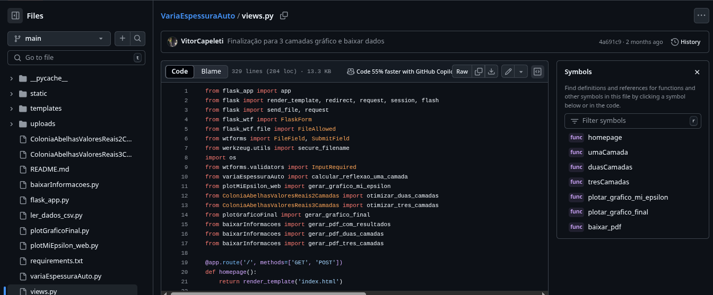

Finalidade do Projeto

ABC - Otimização de Espessura é uma aplicação web interativa, em pesquisa com INPE (Instituto Nacional de Pesquisas Espaciais), desenvolvida com Python (Flask) para otimizar espessuras de camadas eletromagnéticas com foco na minimização da perda por reflexão (Reflection Loss), utilizando algoritmos bioinspirados como o Artificial Bee Colony (ABC). A aplicação aceita arquivos .csv com dados de permissividade (ε) e permeabilidade (μ), realiza simulações com diferentes algoritmos e apresenta os resultados de forma visual, intuitiva e com opção de exportação em PDF. A confirmação dos resultados foi feito com o software comercial FEKO(Fig 2).
Tecnologias Utilizadas

Python 3.x; Flask (web framework); NumPy (operações numéricas); Matplotlib (geração de gráficos); ReportLab (geração de PDF); HTML5 + CSS3 (interface); Base64 (visualização inline de imagens); Algoritmo da Colônia de Abelhas (ABC).
Considerações Finais
Com o resultado do projeto, notei meu amadurecimento como programador, analista e desenvolvedor. Esse projeto foi um pacote completo de aplicabilidade de conceitos, como algoritmos, otimização, gestão de projetos e entre outros. Esse projeto, trouxe também, meu autodesenvolvimento na linguagem Python, onde superei diversos desafios durante minha trajetória.